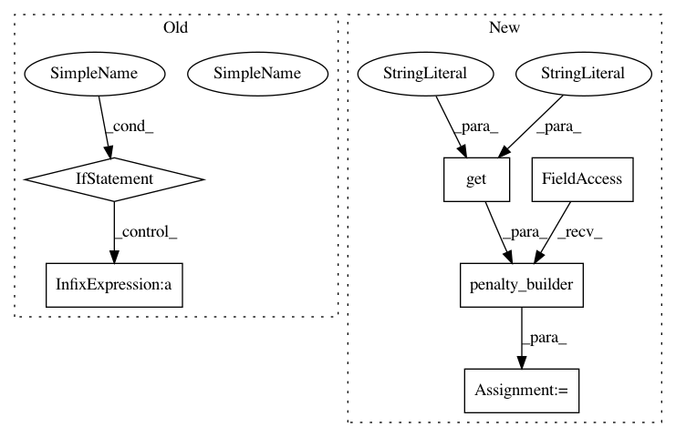

52ac6443139e4a90e8b253b6460bcedf75ad9449,models/CaptionModel.py,CaptionModel,beam_search,#CaptionModel#Any#Any#,33
Before Change
"unaug_p": beam_seq_logprobs_table[divm][:, vix].sum().item(),
"p": beam_logprobs_sum_table[divm][vix].item()
}
if max_ppl:
final_beam["p"] = final_beam["p"] / (t-divm+1)
done_beams_table[divm].append(final_beam)
// don"t continue beams from finished sequences
beam_logprobs_sum_table[divm][vix] = -1000
After Change
diversity_lambda = opt.get("diversity_lambda", 0.5)
decoding_constraint = opt.get("decoding_constraint", 0)
max_ppl = opt.get("max_ppl", 0)
length_penalty = utils.penalty_builder(opt.get("length_penalty", ""))
bdash = beam_size // group_size // beam per group
// INITIALIZATIONS
beam_seq_table = [torch.LongTensor(self.seq_length, bdash).zero_() for _ in range(group_size)]
In pattern: SUPERPATTERN
Frequency: 4
Non-data size: 6
Instances
Project Name: ruotianluo/self-critical.pytorch
Commit Name: 52ac6443139e4a90e8b253b6460bcedf75ad9449
Time: 2019-04-07
Author: rluo@ttic.edu
File Name: models/CaptionModel.py
Class Name: CaptionModel
Method Name: beam_search
Project Name: ruotianluo/self-critical.pytorch
Commit Name: a710695ec2319935068396453896d5341759c1c9
Time: 2019-04-18
Author: rluo@ttic.edu
File Name: models/AttEnsemble.py
Class Name: AttEnsemble
Method Name: beam_search